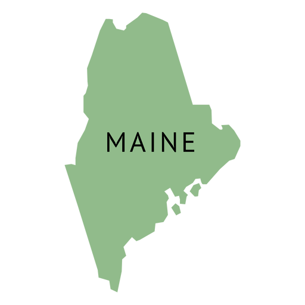

I am a Sophomore at the University of Maine at the Maine Business School. My freshman year I went to Gordon College in Massachusetts. I am originally from Chelsea, Maine. I have two older sisters and a cat. I went to Hall-Dale High School where I participated in activities such as Key Club, Student Government, Jazz Choir, and was the captain of the Track and Field team. At Gordon College I was also on the Track and Field team as well as playing viola in the orchestra. Here at UMaine, I am still getting adjusted but I am getting involved in the MBS Corps and would like to find more ways to get involved with my new school. In my spare time I enjoy music, being outside, and reading.
